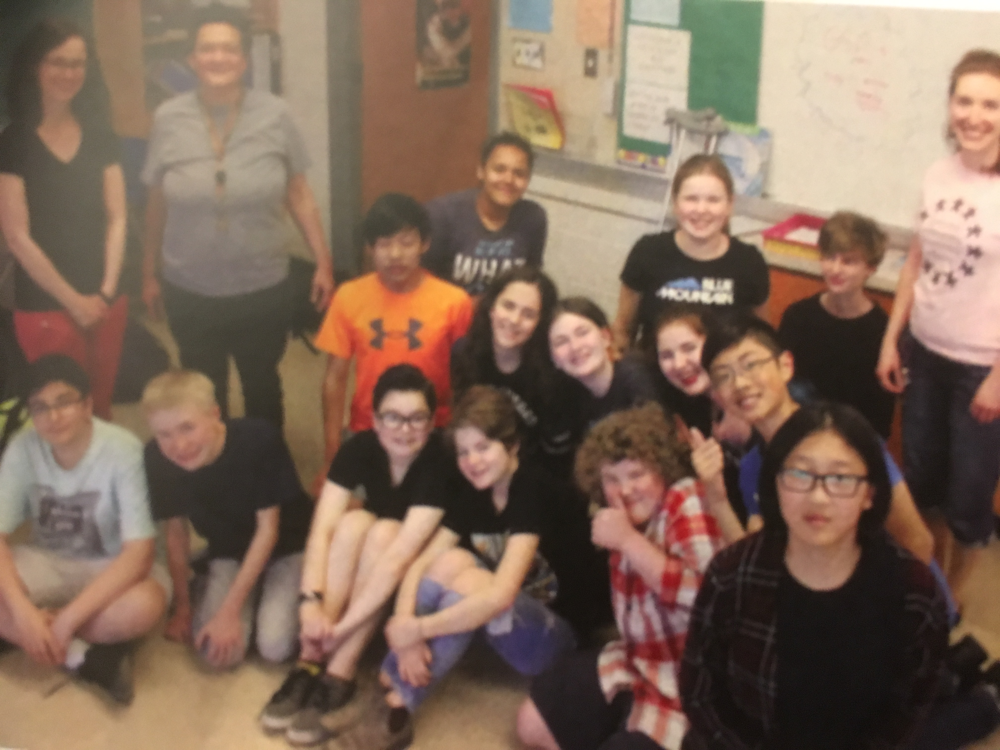

Gay-Straight Alliance
Oct 2016 - Jun 2017
In 8th grade, 2 students who I knew came out as LGBT, being the first in the history of our school. To promote a more welcoming attitude towards sexual minorities and help them feel safe about their identities, I, along with a group of classmates including the 2, worked together to create our school’s first gay-straight alliance (GSA).
Despite the limited time, we made much progress in my final year in middle school. We made posters and announcements, watched out for homophobia or harassment around the school, and invited those feeling uncomfortable to come to our meetings to talk. With the help of a teacher, we also got a guest speaker to talk to the whole school at an assembly.
Overall the project was a success. By the end of the year, several students were comfortable revealing their gender or sexual identity, while others simply felt less restricted by gender stereotypes. Students in lower grades joined the GSA and helped it continue after I entered high school.